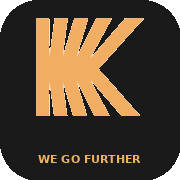
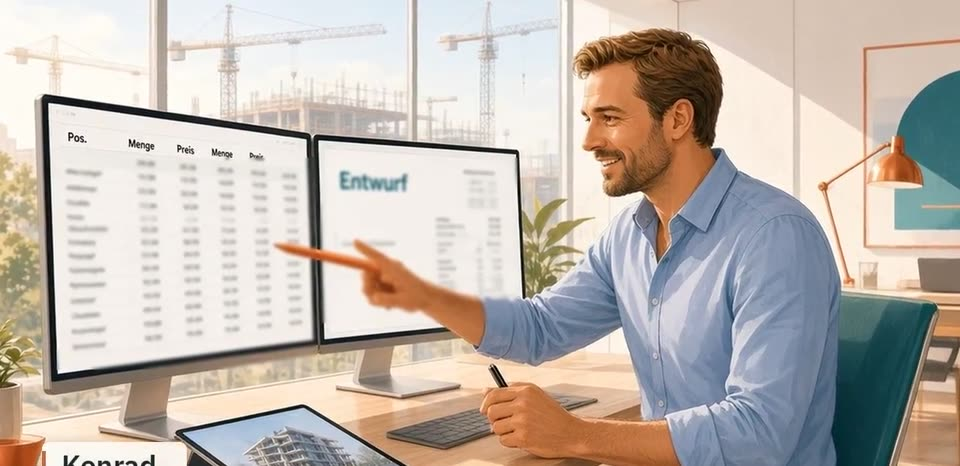
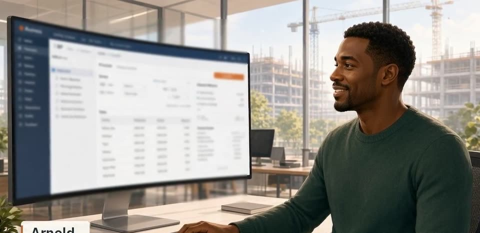
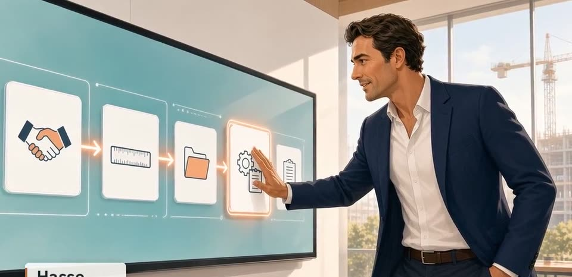

Team Kriwet AI. Was es ist. Was es kann. Wohin es geht.
Kein Prospekt, sondern der echte Stand. Geschrieben für dich als Chef: wie die Kollegen ticken, was wir ihnen ins Stammbuch geschrieben haben und was da für Kriwet noch drinsteckt.
Dominik, kurz vorweg: Das ist kein Chatbot, dem man Fragen stellt.
Das ist ein kleines Planungsbüro, das in unserem Haus sitzt. Sechs Kollegen mit festen Aufgaben, festen Regeln und einem Gedächtnis, das nicht vergisst. Ich hab's seit dem Sommer auf echten Baustellen aufgebaut. Jede Regel da drin ist entstanden, weil irgendwo was schiefging.
Was mir wichtig ist: Die Verantwortung bleibt bei uns. Das Team schlägt vor, rechnet, zeichnet, sortiert. Rausgeschickt, bestellt oder gelöscht wird nur, was einer von uns freigibt.

JörgProjektleitung · Kalkulation · Kriwet
6feste Kollegen mit eigener Rolle
25+Fähigkeiten, die sie abrufen können
26Grundregeln, die für alle gelten
400+gelernte Korrekturen aus echten Projekten
Für dich in einem SatzFleißarbeit raus, Kopf frei.Massen, Angebote, Pläne, Taifun-Import, Belege, Postfach. Was früher Tage gedauert hat, liegt nach Stunden zur Prüfung da.
Was es für Kriwet heißtWissen bleibt im Haus.Wie wir kalkulieren, worauf wir achten, wo die Fallen liegen: Das steht jetzt aufgeschrieben in den Kollegen. Nicht mehr nur im Kopf von einzelnen Leuten.
Was es kostetNutzung statt Personal.Claude-Lizenzen je Kollege plus Rechenzeit. Jede größere Aktion wird mitgezählt (Token-Uhr). Keine Einstellung, keine Einarbeitung, kein Urlaub.
Die Kollegen
Sechs Rollen. Jede mit klarem Auftrag.
Man redet mit ihnen wie mit Kollegen. Hinter jedem Namen steckt eine ausführliche Stellenbeschreibung mit Arbeitsanweisung, Regeln und Erfahrungswissen. Die Namen sind kein Gag: Sie sorgen dafür, dass jeder sofort weiß, wer wofür zuständig ist.
Projektgedächtnis
Anke
Merkt sich alles über alle Projekte: was offen ist, wer uns was schuldet, welche Frist läuft. Schreibt jede Korrektur mit, damit das Team daraus lernt.
Für die FirmaKein Projektwissen geht mehr verloren, auch nicht bei Urlaub, Krankheit oder Wechsel.
Kalkulation

Konrad
Pläne oder LV rein, bepreistes Angebot raus. Mit Massen, Excel, GAEB und Taifun-Datei aus einer Datenquelle. Prüft sich selbst gegen unseren Preisspiegel.
Für die FirmaMehr Angebote in derselben Zeit. Schneller beim Kunden, nachvollziehbare Zahlen.
Werkplanung
Ernst
Wandansichten, Deckenspiegel, Boden, Sanitär, Rückbau. Plansätze, nach denen der Nachunternehmer ohne Rückfrage baut. Mengen kommen aus derselben Quelle wie das Angebot.
Für die FirmaPlan = Angebot. Weniger Nachträge, weniger Streit auf der Baustelle.
Taifun

Arnold
Spielt Angebote und Bestellungen direkt in Taifun ein. Ohne Abtippen, ohne doppelte Kunden. Bereitet Rechnungsvorlagen für die Buchhaltung vor.
Für die FirmaTaifun bleibt sauber. Fehler durch Abtippen fallen weg.
Projektmanagement

Hasso
Nimmt einen Auftrag an, legt die Projektakte an, verteilt die Arbeit an Konrad, Ernst und Arnold und hält die Fäden zusammen. Ein Ansprechpartner für das ganze Projekt.
Für die FirmaJedes Projekt läuft nach demselben Schema. Egal, wer es betreut.
Belege
BeateBeta
Aus Quittungen und Nachunternehmer-Rechnungen wird ein geprüftes Paket für die Buchhaltung. Prüft Pflichtangaben, findet Dubletten.
Für die FirmaWeniger Rückfragen aus der Buchhaltung, schnellerer Monatsabschluss.
Dazu im Werkzeugkasten: Morning Briefing (Postfach in zehn Minuten), Mailentwürfe zum Freigeben, Voicenotes und WhatsApp auswerten, Revisionsordner und Bautagebuch, Schlussrechnungsentwurf, Ordner aufräumen, Anhänge versionieren.
Und im Hintergrund: der Sachverständige. Er bringt jede Verbesserung geprüft zu allen Kollegen bei Kriwet. Dazu unten mehr.
Wie ein Kollege aufgebaut ist
Was steckt eigentlich in so einem Mitarbeiter?
Technisch heißt das „Skill“. Auf Deutsch: eine Stellenbeschreibung, die Claude jedes Mal liest, bevor es loslegt. Sechs Schichten, am Beispiel Konrad. Tipp eine Schicht an.
Der Unterschied zu „einfach mal ChatGPT fragen“: Ein normaler Chat fängt jedes Mal bei null an. Unsere Kollegen fangen bei dem an, was wir in fünf Monaten gelernt haben.
Ins Stammbuch geschrieben
26 Grundregeln. Die wichtigsten zehn.
Die gelten für jeden Kollegen, in jedem Projekt, bei jedem Mitarbeiter von uns. Keine davon ist aus Theorie entstanden.
1
Nichts geht raus ohne FreigabeMails liegen als Entwurf in Outlook. Gesendet wird nur, was ein Mensch ausdrücklich freigibt.
2
Nichts wird gelöschtAussortiertes wandert in einen Ablageordner. Löschen nur mit Zustimmung, mit Angabe, wo die Sicherung liegt.
3
Jede Zahl hat eine QuelleMenge mit Planbezug, Preis mit Herkunft. Was geschätzt ist, steht als geschätzt drin.
4
Fehlschläge werden sofort gemeldetDatei nicht lesbar, Verbindung weg, Quelle nur halb gelesen: Das muss sofort auf den Tisch. Nie so tun, als wäre alles drin.
5
Erst fragen, dann losrennenBei Kalkulation und Angebot wird bei Unsicherheit gefragt. In zwei Sätzen Alltagssprache, ohne Kürzel.
6
Doppelt prüfen vor VersandPlausibilität, Benchmark gegen frühere Projekte, Abgleich Angebot gegen Pläne. Erst dann geht ein Angebot zur Freigabe.
7
Kriwet-Optik, immerWas rausgeht, trägt Kriwet-Briefpapier und Kriwet-Layout. Angebots-PDF im gewohnten Taifun-Druckbild.
8
Ordnung im ProjektordnerAlles vom Tag liegt im Tagesordner. Kurze Pfade, damit jeder Kollege jede Datei auch über OneDrive öffnen kann.
9
Keine KI-Spuren im KalenderEinträge sehen aus wie von Hand geschrieben, neutral, ohne Wertung. Kollegen und Kunden sehen sie ja.
10
Jede Korrektur wird RegelSagt einer von uns „so nicht“, wird das sofort mitgeschrieben und landet bei der nächsten Runde in der Stellenbeschreibung.
Gedächtnis und Lernen
Das Team wird jede Woche besser.
Das ist für mich der eigentliche Wert. Nicht was das Team heute kann, sondern dass es aus unserer Arbeit lernt. So läuft der Kreis:
1 · ArbeitEin Kollege kalkuliert, zeichnet oder sortiert in einem echten Projekt.
2 · KorrekturWir sagen, was nicht passt: „zu glatt“, „Menge falsch“, „so nicht“.
3 · MitschriftAnke schreibt das sofort als Lernzeile auf. Über 400 sind es inzwischen.
4 · Neue RegelGesammelt, sortiert, genau an einer Stelle eingebaut. Keine Regel doppelt, keine gegeneinander.
5 · ReleaseDer Sachverständige prüft automatisch und bringt den neuen Stand zu allen Kollegen.
Projekt-NotizbuchJedes Projekt hat einen aktuellen Stand: offene Punkte, Fristen, Zusagen von Dritten mit Datum. Dazu eine Chronik, in der nichts überschrieben wird.
ÜbergabeprotokolleWird ein Chat voll, schreibt das Team ein Protokoll. Der nächste macht ohne Qualitätsverlust weiter. Über 20 Projekte laufen so.
FallenwissenWas in Taifun, Outlook oder am Bildschirm schon mal schiefging, steht drin. Derselbe Fehler passiert nicht zweimal.
So kommt es zu den Kollegen
Einer forscht, alle profitieren.
Neues entwickle ich erst mal an meinen Projekten. Wenn es sitzt, macht der Sachverständige daraus ein Release für den Firmenordner TEAM KRIWET AI auf dem Server.
Entwicklungan echten Projekten
→
Sachverständigerbaut das Release
→
Abnahmenur bei GRÜN
→
Testkollege„Max Mustermann“
→
Alle bei Kriwetgleicher Stand
Kein Release ohne Abnahme GRÜN.Jede neue Fehlerart wird zuerst als Prüfung eingebaut, dann behoben, und zwar an der Quelle. Jeder Kollege richtet sich das Team per Einrichtungsassistent für sich ein: eigenes Postfach, eigener Kalender, eigene Projekte.
Echter Einsatz
LVATE Hamburg. Von Juni bis heute.
Zwei Minuten, die zeigen, wie die Kollegen entstanden sind: immer dann, wenn im Büro oder auf der Baustelle was gefehlt hat.
FILM · 2:10 · LVATE HAMBURG
NEU · NUR FÜR DICH
Das Chef-Cockpit. Alles im Blick, ohne nachzufragen.
Wie heute besprochen: Ich baue eine Ebene ein, die nur du siehst. Jeder Kollege von uns führt sowieso Notizbücher mit Stand, Fristen und Zahlen. Das Cockpit liest die zusammen und macht daraus deine Übersicht. Live, auf Zuruf oder jeden Montag automatisch.
Kriwet · CockpitDonnerstag, 19.11. · Stand live
Laufende Projekte0alle Projektleiter
Meine Projekte0davon 1 neu
Angebote offen03 warten auf Freigabe
Auftragsvolumen offen0Pipeline nach Wahrscheinlichkeit
Fristen 7 Tage01 überfällig
Fitnessstudio DüsseldorfAusführung · Woche 3 von 6
im Plan
Retail HamburgAbrechnung · Schlussrechnung im Entwurf
Store OberhausenAngebot beim Kunden · Rückmeldung KW 48
im Plan
Was gerade passiert
Team-Auslastung (nur Chef-Ansicht)
Projektleiter A
86 %
Projektleiter B
61 %
Projektleiter C
94 %
KI-Kosten Monat
38 % vom Budget
Chef-Ansicht: alle Projekte, Volumen, Auslastung · Beispieldaten zur Veranschaulichung · im echten Cockpit stehen hier unsere Projekte
Ein Dashboard für alle. Mit Chef-Ebene.
Jeder Kollege bekommt sein Dashboard: seine Projekte, seine Fristen, seine offenen Angebote. Deine Fassung ist dasselbe Dashboard, nur mit Funktionen, die die anderen nicht haben. Ein Werkzeug, zwei Berechtigungen. Oben im Cockpit kannst du umschalten.
Kollege
Dominik
Eigene Projekte mit Ampel, Fristen, offenen Punkten
✓
✓
Eigene Angebote und was auf Freigabe wartet
✓
✓
Morning Briefing und Wochenaufgaben
✓
✓
Alle Projekte aller Projektleiter auf einer Seite
–
✓
Auftragsvolumen, Pipeline, Trefferquote
–
✓
Soll/Ist und Nachkalkulation über alle Projekte
nur eigene
✓
Einkaufspreise und Preisspiegel der Firma
nach Freigabe
✓
Auslastung der Projektleiter
–
✓
KI-Kosten je Projekt und Kollege
nur eigene
✓
Frühwarnung über alle Projekte und Montagsbericht der Firma
–
✓
Zwischenstand jedes Projekts auf Zuruf ziehen
nur eigene
✓
Frag das Cockpit.
So würdest du es nutzen. Ein Satz, eine Antwort mit Zahlen und Quelle. Tipp eine Frage an.
Cockpit
Tipp links eine Frage an.
◉ProjektampelAlle Projekte auf einer Seite, grün, gelb, rot. Mit dem Grund, warum etwas gelb ist, und wer dran ist.
€Soll und IstKalkuliert gegen tatsächlich beauftragt und abgerechnet. Nachkalkulation je Projekt und Gewerk, auf Knopfdruck.
↗Angebots-PipelineWas ist raus, was wartet auf Freigabe, wie viel Volumen steht in Aussicht. Trefferquote über die Zeit.
⏱Fristen und EinfordernWer schuldet uns was seit wann: Nachunternehmer-Zusagen, Kundenfreigaben, Zahlungen. Mit Zähler, wie oft schon verschoben.
⚠FrühwarnungNachträge, Mehr- und Minderkosten, Bauzeit wackelt: Das Cockpit meldet sich, bevor es teuer wird.
✉MontagsberichtJeden Montag früh eine Seite: was letzte Woche passiert ist, was diese Woche brennt. Ohne dass einer was zusammenstellt.
⌁Zwischenstand auf Zuruf„Wie steht Hamburg?“ reicht. Du bekommst den Stand aus dem Projekt-Notizbuch, nicht aus dem Gedächtnis von irgendwem.
ΣKI-Kosten-UhrWas hat das Team diesen Monat gekostet, je Projekt und je Kollege. Damit du den Nutzen gegen die Kosten halten kannst.
⌂Preisspiegel der FirmaUnsere Nachunternehmer-Preise über alle Projekte. Wo liegen wir, wer ist teuer geworden, was ist marktüblich.
Wer sieht was?Das Cockpit liegt in einem eigenen Bereich, nur für dich. Die Kollegen sehen ihre Projekte, du siehst alle. Einkaufspreise und Preisspiegel sind nur dort sichtbar, wo du es freigibst.
Woher kommen die Daten?Aus dem, was ohnehin entsteht: Projekt-Notizbücher, Angebote, Taifun, Postfach. Niemand muss für das Cockpit extra etwas pflegen.
Wie ist der Stand?Die Notizbücher und Zahlen gibt es schon. Das Dashboard baue ich jetzt Schritt für Schritt auf: erst die Kollegen-Fassung mit Projektampel, dann deine Chef-Ebene mit Montagsbericht und Gesamtübersicht.
Was noch drin ist
Wohin das gehen kann. Für Kriwet als Firma.
Alles hier ist mit dem, was schon steht, machbar. Manches in Wochen, manches braucht mehr Zeit. Tipp eine Karte an für ein Beispiel.
Ehrlich gesagt
Was das Team nicht ist.
Kein Ersatz für VerantwortungWir prüfen und geben frei. Das bleibt so, auch wenn das Team immer selbstständiger wird.
Nur so gut wie das, was reingehtSchlechte Pläne, unklare LVs: Das Team sagt dann, was fehlt. Aber zaubern kann es nicht.
Nicht fertigEs wächst jede Woche. Manches holpert noch, gerade bei der Bedienung von Programmen am Bildschirm. Das wird dokumentiert und besser.
Nicht kostenlosLizenzen und Rechenzeit kosten Geld. Deshalb zählen wir mit und machen den Nutzen sichtbar.
Für unser Gespräch
Was wir heute entscheiden sollten.
Hak ab, was wir besprochen haben. Bleibt nur auf diesem Gerät gespeichert.